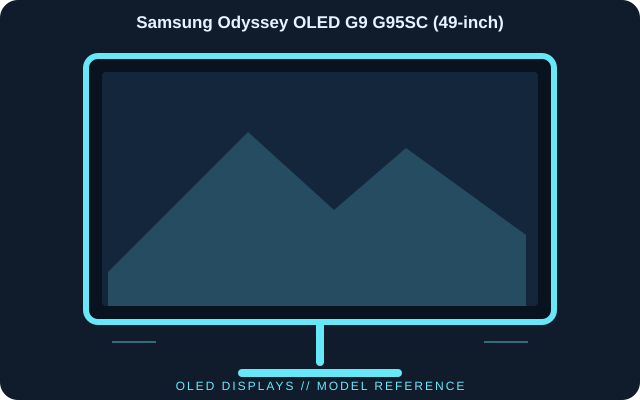

[ INDIVIDUAL COMPONENT // DISPLAYS ]
Samsung Odyssey OLED G9 G95SC (49-inch)
The G95SC is Samsung’s 49-inch curved OLED G9 with a 32:9 Dual QHD canvas, 240 Hz operation and smart-TV features. Do not confuse it with other Odyssey G9 LCD/OLED revisions.

IDENTIFICATION: Samsung Odyssey OLED G9 G95SC (49-inch); 2023 generation. Verify the full model code, region and hardware revision on the unit label. Published specifications describe the identified configuration; its matching manual and label take precedence if revisions differ.
Published specifications
| Catalog subcategory | Oled Displays |
|---|---|
| Exact model | Samsung Odyssey OLED G9 G95SC (49-inch) |
| Panel / native resolution | 49-inch QD-OLED, 5120 × 1440 (32:9), 1800R curve |
| Maximum refresh rate | 240 Hz |
| Response time | 0.03 ms GtG (manufacturer claim) |
| Typical brightness / contrast | 250 cd/m² typical; 1,000,000:1 static contrast (manufacturer stated) |
| Video inputs | HDMI 2.1 × 2 and DisplayPort 1.4 |
| Other connectivity | USB hub; Wi-Fi/Bluetooth and smart-TV functions are part of G95SC configuration |
| Sync / HDR | Adaptive-Sync / FreeSync Premium Pro support; VESA DisplayHDR True Black 400 class |
Compatibility & connectivity notes
5120 × 1440 at 240 Hz requires a graphics output, cable and driver combination that supports the full bandwidth; verify the manual’s per-input mode table. The dual-QHD format is wider than standard 16:9 and may need application/game support. OLED static-image care and panel-protection options should follow Samsung’s instructions.
Preservation notes
Record the complete model suffix, serial/date code, input selection, source device, cable or adapter, tested timing and observed condition. Retain the matching regional manual and any calibration or service records with the display. Follow the manufacturer’s cleaning and service instructions; do not open CRT equipment without appropriate high-voltage training.
Manufacturer documentation & authoritative sources
- Samsung — Odyssey OLED G9 G95SC product specificationsManufacturer documentation and model-specific reference.
- Samsung — G95SC manuals and supportManufacturer documentation and model-specific reference.